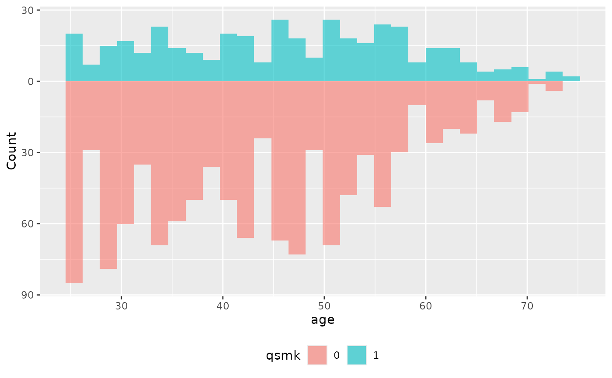
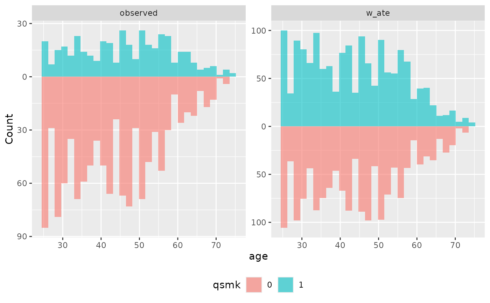
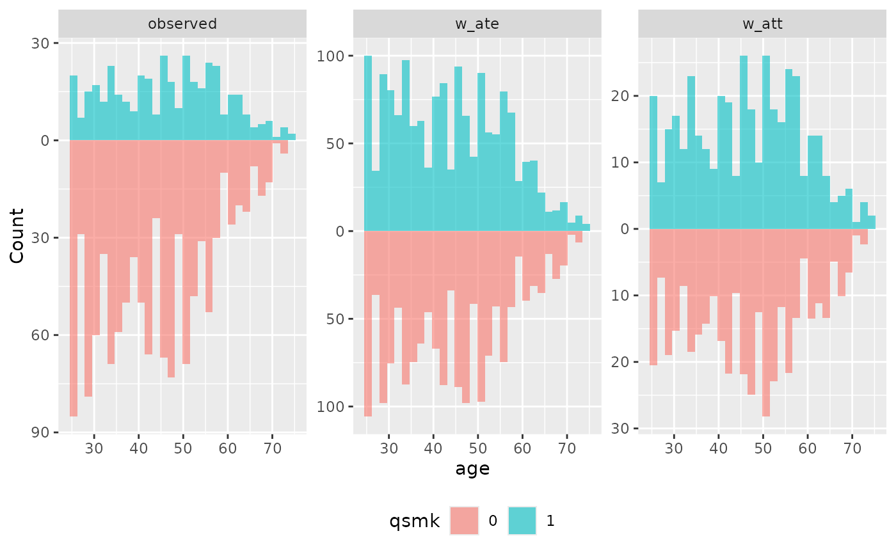
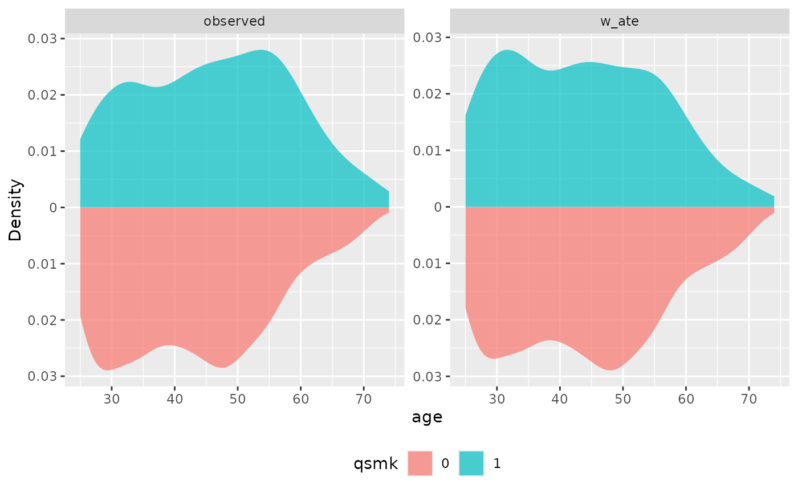
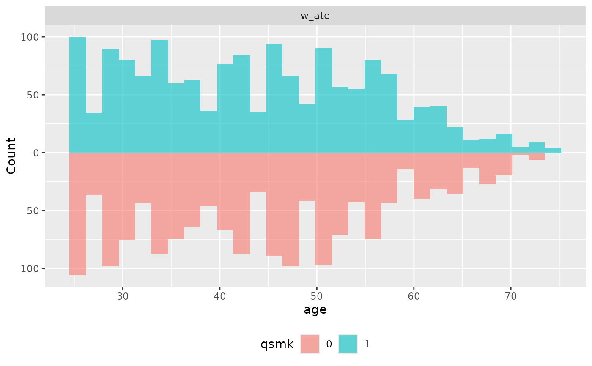
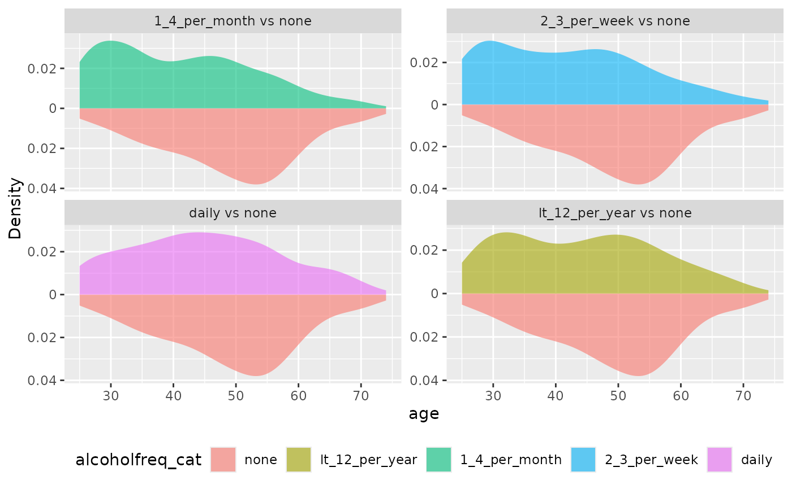
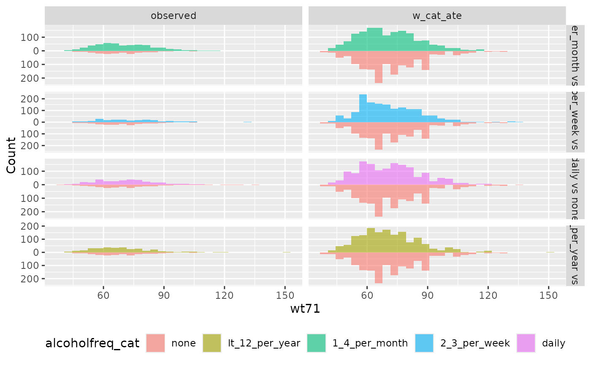

Create mirror distribution plots (histograms or density plots) to compare the distribution of variables between treatment groups before and after weighting. This function helps assess covariate balance by visualizing the distributions side-by-side with one group mirrored below the axis.
Usage
plot_mirror_distributions(
.data,
.var,
.exposure,
.weights = NULL,
type = c("histogram", "density"),
mirror_axis = "y",
bins = 30,
binwidth = NULL,
bw = "nrd0",
adjust = 1,
include_unweighted = TRUE,
alpha = 0.6,
na.rm = FALSE,
.reference_level = 1L
)Arguments
- .data
A data frame containing the variables.
- .var
The variable to plot. Supports tidyselect syntax. Can be unquoted.
- .exposure
Column name of treatment/group variable. Supports tidyselect syntax. Can be unquoted. For binary variables, must have exactly 2 levels. For categorical variables (>2 levels), creates pairwise comparisons against a reference group.
- .weights
Optional weighting variable(s). Can be unquoted variable names, tidyselect syntax, a character vector, or NULL. Multiple weights can be provided to compare different weighting schemes. Default is NULL (unweighted).
- type
Character; type of plot - "histogram" or "density". Default is "histogram".
- mirror_axis
Character; which axis to mirror - "y" (default) or "x".
- bins
Integer; number of bins for histogram. Only used when type = "histogram".
- binwidth
Numeric; width of bins for histogram. Only used when type = "histogram". If both bins and binwidth are specified, binwidth takes precedence.
- bw
Bandwidth for density estimation. Only used when type = "density". Can be numeric or character (e.g., "nrd0", "sj").
- adjust
Numeric; bandwidth adjustment factor for density. Only used when type = "density". Default is 1.
- include_unweighted
Logical. If using
.weights, also show unweighted distribution? Defaults to TRUE.- alpha
Numeric; transparency level for fills. Default is 0.6.
- na.rm
Logical; if TRUE, drop NA values before plotting.
- .reference_level
The reference group level for categorical exposures (>2 levels). Can be a string (group level) or numeric (position). Defaults to 1 (first level). Only used when .exposure has more than 2 levels.
Details
Mirror distribution plots display the distribution of one group above the x-axis and the other group below (mirrored). This makes it easy to compare distributions and assess balance. The function supports both histogram and density plot types.
For categorical exposures (>2 levels), the function creates a grid of pairwise comparisons against a reference group. Each panel shows one non-reference level compared to the reference level using the mirror distribution format.
When using weights, the function can display both weighted and unweighted distributions for comparison. Multiple weighting schemes can be compared by providing multiple weight variables.
See also
geom_mirror_histogram()for the underlying histogram geomgeom_mirror_density()for the underlying density geomplot_qq()for QQ plots, another distributional comparisongeom_ecdf()for ECDF plots
Examples
library(ggplot2)
# Basic histogram (unweighted)
plot_mirror_distributions(nhefs_weights, age, qsmk)

# Density plot instead of histogram
plot_mirror_distributions(nhefs_weights, age, qsmk, type = "density")
# With weighting
plot_mirror_distributions(nhefs_weights, age, qsmk, .weights = w_ate)

# Compare multiple weighting schemes
plot_mirror_distributions(nhefs_weights, age, qsmk, .weights = c(w_ate, w_att))

# Customize appearance
plot_mirror_distributions(
nhefs_weights, age, qsmk,
.weights = w_ate,
type = "density",
alpha = 0.7
)

# Without unweighted comparison
plot_mirror_distributions(
nhefs_weights, age, qsmk,
.weights = w_ate,
include_unweighted = FALSE
)

# Categorical exposure - creates grid of comparisons
plot_mirror_distributions(
nhefs_weights,
age,
alcoholfreq_cat,
type = "density"
)

# Categorical with weights
plot_mirror_distributions(
nhefs_weights,
wt71,
alcoholfreq_cat,
.weights = w_cat_ate,
.reference_level = "none"
)
